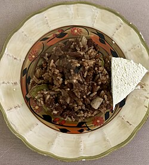

Gallopinto
Gallopinto is a traditional Nicaraguan dish made with rice and beans. It is often served for breakfast and is a staple in Nicaraguan cuisine.

Description:
Gallopinto is a flavorful dish that combines rice and black beans with sautéed
vegetables. It is a beloved breakfast item in Nicaragua and is known for its vibrant
colors and hearty taste.
Ingredients:
- 1 cup of rice
- 1 cup of black beans
- 1 small onion, chopped
- 1 small bell pepper, chopped
- 2 cloves of garlic, minced
- 2 tablespoons of vegetable oil
- Salt and pepper to taste
Instructions:
- Cook the rice according to package instructions.
- In a separate pan, heat the vegetable oil over medium heat. Add the chopped onion, bell pepper, and garlic. Sauté until the vegetables are soft.
- Add the cooked rice and black beans to the pan. Stir well to combine.
- Season with salt and pepper to taste. Cook for an additional 5 minutes, stirring occasionally.
- Serve hot and enjoy your Gallopinto!
Go to Home